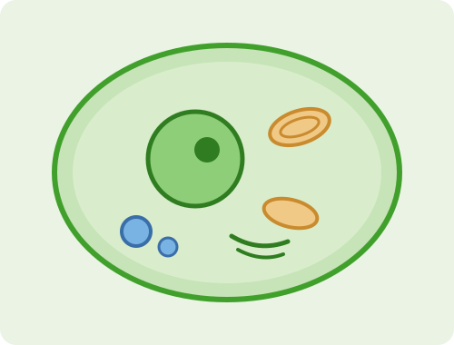

Cell Explorer
A cell is a workshop, not a bag of parts. Turn the model, pick an organelle, and see the one job it does. Animal, plant, and bacterial cells, side by side in three dimensions.

A typical human cell.
Drag to turn · click the canvas then scroll to zoom · click a part to name it
Parts
How this works: each cell is built from spheres, rods, and panels placed in three dimensions, then drawn back to front on a plain canvas with no 3D library. Shading comes from a single fixed light, and distant parts fade into the haze so depth reads correctly. Colors are assigned per organelle and stay the same in both themes. Shapes and sizes are schematic, not to scale.
Why compartments matter
Animal and plant cells are eukaryotic, which means they keep their chemistry in separate rooms. The nucleus holds the DNA away from the traffic of the cytoplasm. Mitochondria run respiration behind their own membranes because the process leaks reactive molecules. Lysosomes hold digestive enzymes that would damage the cell if they floated free. Compartments let one cell run reactions that would otherwise interfere with each other.
Bacteria are prokaryotic and skip almost all of it. No nucleus, no mitochondria, no internal membrane rooms. They still copy DNA, build proteins, and generate energy. They just do it in one shared space. That simplicity is why they divide in twenty minutes while your cells take most of a day. Plant cells go the other direction and add rooms: a chloroplast for photosynthesis, a large central vacuole for water pressure, and a rigid cellulose wall outside the membrane.